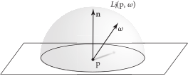
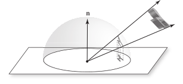
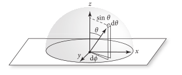
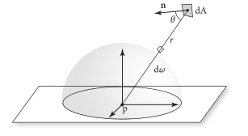
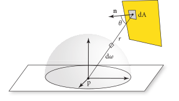

4.2 使用辐射度量积分（Working with Radiometric Integrals）
在渲染中，一个常见的任务是评估辐射度量量的积分。在本节中，我们将介绍一些可以简化这一过程的技巧。为了说明这些技术的使用，我们将以计算某一点的辐照度为例。由于一组方向 \( \Omega \) 上的射辐亮度，位于点 \( \text{p} \) 且表面法线为 \( \mathbf{n} \) 的辐照度为
\[ E(\text{p},\text{n}) = \int_{\Omega} L_{\text{i}}(\text{p},\omega)|\cos\theta|\text{d}\omega \]
其中 \( L_{\text{i}}(\text{p},\omega) \) 是入射辐射亮度函数（图 4.5），而积分中的 \( \cos\theta \) 因子是由辐射亮度定义中的 \( \text{d}A^{\perp} \) 因子产生的。 \( \theta \) 是 \( \omega \) 和表面法线 \( \mathbf{n} \) 之间的夹角。辐照度通常是在给定表面法线 \( \mathbf{n} \) 的方向半球 \( \text{H}^2(\mathbf{n}) \) 上计算的。
图 4.5： 点 \( \text{p} \) 的辐照度对该点上方整个上半球的辐射亮度乘以入射方向的余弦进行积分求出的。
方程（4.7）中的积分是相对于半球上的立体角进行的，测度 \( \text{d}\omega \) 对应于单位半球上的表面积。（回顾第 3.8.1 节中立体角的定义。）
4.2.1 投影立体角的积分（Integrals over Projected Solid Angle）
在辐射度量量的积分中，各种余弦因子往往会使积分表达的内容变得混乱。通过使用 投影立体角（projected solid angle） 而非立体角来测量被积分对象所覆盖的面积，可以避免这个问题。物体所张的投影立体角是通过将物体投影到单位球上（就像计算立体角时所做的那样），然后将得到的形状向下投影到与表面法线垂直的单位圆盘上（如图 4.6 所示）来确定的。涉及余弦加权立体角的半球方向积分可以重写为关于投影立体角的积分。
图 4.6：物体所张的投影立体角是其所张的余弦加权立体角。它可以通过找到物体的立体角，将其向下投影到与表面法线垂直的平面上，并在该平面上测量其面积来计算。因此，投影立体角取决于测量时的表面法线，因为法线决定了投影平面的方向。
投影立体角测度与立体角测度的关系为
\[
\text{d}\omega^{\perp} = |\cos\theta|\text{d}\omega
\]
因此，半球上的辐照度-辐射亮度积分（irradiance-from-radiance integral）可以更简单地写为：
\[ E(\text{p},\mathbf{n}) = \int_{\text{H}^2(\mathbf{n})} L_{\text{i}}(\text{p},\omega)\text{d}\omega^{\perp} \]
在本书的其余部分，我们将用立体角而不是投影立体角来表示关于方向的积分。然而，在其他资料中，可能会使用投影立体角，因此始终注意被积函数的实际测度是很重要的。
4.2.2 球面坐标的积分（Integrals over Spherical Coordinates）
通常，使用方程（3.7）将立体角的积分转换为球面坐标 \( (\theta,\phi) \) 的积分是方便的。为了将立体角的积分转换为 \( (\theta,\phi) \) 的积分，我们需要能够表达一组方向 \( \text{d}\omega \) 的微分面积与一个 \( (\theta,\phi) \) 对的微分面积之间的关系（图 4.7）。单位球面上的微分面积 \( \text{d}\omega \) 是它两条边的微分长度 \( \sin\theta\text{d}\phi \) 和 \( \text{d}\theta \) 的乘积。因此，
\[
\text{d}\omega = \sin\theta\text{d}\theta\text{d}\phi
\]
（这个结果也可以通过第 2.4.1 节中的多维变换方法推导得出。）
图 4.7： 由微分立体角所张的微分面积 \( \text{d}\omega \) 是两条边 \( \sin\theta\text{d}\phi \) 和 \( \text{d}\theta \) 的微分长度的乘积。由此得出的关系 \( \text{d}\omega = \sin\theta\text{d}\theta\text{d}\phi \) 是立体角的积分与球面角的积分之间转换的关键。
因此，我们可以看到半球上的辐照度积分，当方程（4.7）中的 \( \Omega = \text{H}^2(\mathbf{n}) \)时，可以等效地写为
\[ E(\text{p},\mathbf{n}) = \int_{0}^{2\pi}\int_{0}^{\pi/2} L_{\text{i}}(\text{p},\theta,\phi)\cos\theta\sin\theta\text{d}\theta\text{d}\phi \]
如果所有方向上的辐射亮度相同，则方程简化为 \( E = \pi L_{\text{i}} \) 。
4.2.3 面积的积分（Integrals over Area）
最后一个有用的变换是将方向上的积分转化为面积上的积分。再次考虑方程（4.7）中的辐照度积分，想象有一个发出恒定辐射亮度的四边形，我们希望计算在点 \( \text{p} \) 处的辐照度。作为方向 \( \omega \) 或球面坐标 \( (\theta,\phi) \) 的积分来计算这个值通常并不简单，因为给定一个特定方向，确定四边形在该方向或 \( (\theta,\phi) \) 上是否可见并非易事。将辐照度作为四边形面积的积分来计算要容易得多。
表面的微分面积 \( \text{d}A \) 与从点 \( \text{p} \) 观察的微分立体角的关系是
\[ \text{d}\omega = \frac{\text{d}A\cos\theta}{r^2} \]
其中 \( \theta \) 是 \( \text{d}A \) 的表面法线与指向 \( \text{p} \) 的向量之间的夹角，而 \( r \) 是从 \( \text{p} \) 到 \( \text{d}A \) 的距离（图 4.8）。我们在此不推导这个结果，但可以直观地理解它：如果 \( \text{d}A \) 与 \( \text{p} \) 的距离为 1，并且完全对齐以垂直于 \( \text{d}\omega \) ，那么 \( \text{d}\omega=\text{d}A \)、 \( \theta=0 \) 且方程 (4.9) 成立。当 \( \text{d}A \) 距离 \( \text{p} \) 更远，或者旋转后不再与 \( \text{d}\omega \) 的方向对齐时， \( r^2 \) 和 \( \cos\theta \) 因子会相应补偿以减小 \( \text{d}\omega \) 。
图 4.8： 由微分面积 \( \text{d}A \) 所张的微分立体角 \( \text{d}\omega \) 等于 \( \text{d}A\cos\theta/r^2 \)，其中 \( \theta \) 是 \( \text{d}A \) 的表面法线与指向点 \( \text{p} \) 的向量之间的夹角，\( r \) 是从 \( \text{p} \) 到 \( \text{d}A \) 的距离。
因此，我们可以将四边形源的辐照度积分写为
\[
E(\text{p},\mathbf{n})=\int_{A}L\cos\theta_{\text{i}}\frac{\cos\theta_{\text{o}}\text{d}A}{r^2}
\]
其中 \( L \) 是四边形表面发射的辐射亮度，\( \theta_\text{i} \) 是在 \( \text{p} \) 处的表面法线与从 \( \text{p} \) 到光源上的点 \( \text{p}' \) 的方向之间的夹角，\( \theta_\text{o} \) 是光源在 \( \text{p}' \) 处的表面法线与从 \( \text{p}' \) 到 \( \text{p} \) 的方向之间的夹角（图 4.9）。
图 4.9： 要计算来自四边形的光源在点 \( \text{p} \) 的辐照度，用光源的表面积进行积分比用其所张的不规则方向集进行积分更为简单。方程（4.9）给出的立体角与面积之间的关系使我们能够在这两种方法之间来回转换。